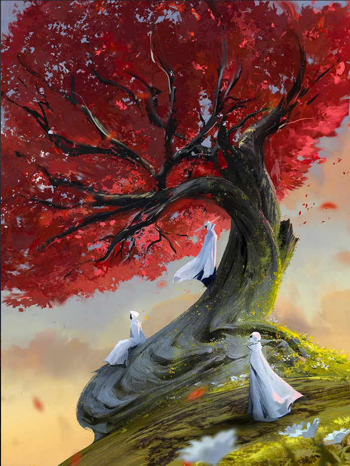

Ross Draws

Bio
Ross Draws (Ross Tran) is a digital illustrator, animator, and online educator known for his anime-inspired art style. Born in 1992 here in the United States, he attended Pasadena’s Art Center of Design. He won his first concept artist position at a nearby west studio when he was just 17. A couple of years later, he worked as a lead character designer on his first feature film. He created Echo from the 2014 film “Earth to Echo”; he now counts Disney, Microsoft, and Samsung among his clients, and he has since worked on the Halo franchise and many more films.
Key characteristics of the artist works
A lot of his art contains large landscapes and characters from video games and anime. From just looking at his art gallery, he seems to like drawing with very bright colors. Since he uses large landscapes in many of his drawings, it makes you feel almost like you're there as well.